简介（Overview）
《Ritual》是一款合作、实时、静默沟通的桌游。玩家扮演萨满（Shamans），需在不交谈的情况下协作完成仪式，释放自然之力以保护部落：平息怒海、熄灭野火、让河流与庄稼复苏，甚至让火山喷发。
胜利条件：完成全部 6 个仪式步骤。
仪式共分 3 个限时轮次。每轮中，每位玩家有一个秘密的个人目标，以及一个所有人共享的共同目标——即完成仪式牌上显示的某些步骤。
游戏开始时，没人知道下一轮要完成哪些步骤。为了探明下一步，玩家必须先完成个人目标：通过收集感召牌（Inspiration Cards）上显示的符文（Runes）来获得感召（Get Inspired）。
开始执行仪式步骤前，必须有 3 名玩家 获得感召。仪式牌会告诉玩家符文应如何分配；尽管只有一名玩家知道“下一步”是什么，但所有人都应尝试理解需要做什么，共同完成它。
配件（Components）
- 10 块 仪式板（Ritual Boards）
- 60 张 仪式牌（Ritual Cards）
- 25 张 感召牌（Inspiration Cards）
- 6 个 神秘位面（Mystic Planes）
- 40 枚 符文（Runes）——每种颜色各 8 枚：红 、蓝 、绿 、黄 、紫
- 6 个 顺序标记（Order Tokens）（编号 1–6）
- 3 个 感召标记（Inspiration Tokens）
- 1 个 回合图腾（Turn Totem）
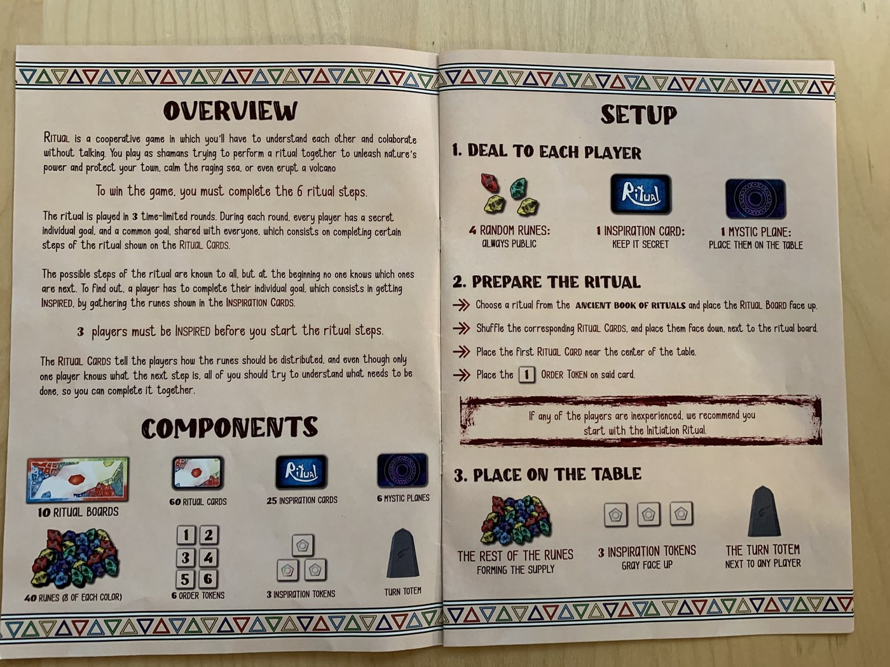
原书「简介、配件与设置」跨页
设置（Setup）
- 给每位玩家发 4 枚随机符文（始终公开）。
- 给每位玩家发 1 张感召牌（保密，不可给他人看）。
- 每位玩家面前放置 1 个神秘位面。
- 从仪式古卷（Ancient Book of Rituals）中选择一项仪式，将对应仪式板正面朝上放置。
- 洗匀对应仪式牌，面朝下放在仪式板旁。
- 将第一张仪式牌放在桌面中央附近。
- 将编号 1 的顺序标记放在该牌上。
- 其余符文组成供应区（Supply）。
- 将 3 个感召标记灰色面朝上放置。
- 将回合图腾放在任意玩家旁。
若有新手玩家，建议从「启蒙仪式（Initiation Ritual）」开始。
游戏流程（How to Play）
游戏共 3 轮，每轮限时，逐步完成 6 个仪式步骤：
- 第 1 轮：完成第 1 个仪式步骤。
- 第 2 轮：完成接下来 2 个仪式步骤。
- 第 3 轮：完成最后 3 个仪式步骤。
每轮时长
时长取决于玩家人数和所选难度。可使用简单计时器，也可使用官网 / App / 音轨。
| 玩家 | 学徒 Apprentice | 萨满 Shaman | 大师 Guru | 传说 Legend |
|---|
| 2 | 4:30 | 4:00 | 3:30 | 3:00 |
| 3 | 6:30 | 5:30 | 4:30 | 4:00 |
| 4 | 7:00 | 6:00 | 5:00 | 4:30 |
| 5 | 7:30 | 6:30 | 5:30 | 5:00 |
| 6 | 8:00 | 7:00 | 6:00 | 5:30 |
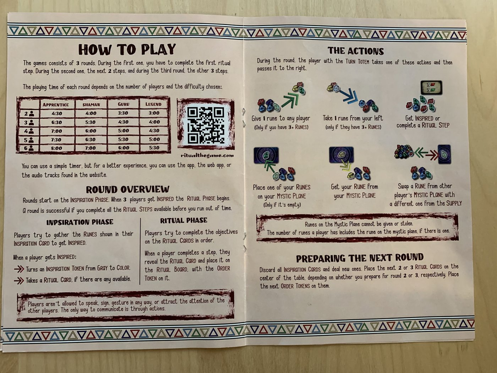
原书「游戏流程与行动」跨页，含各难度时长表
回合图腾与行动循环
整局游戏中，回合图腾（Turn Totem）会沿顺时针方向不断传递。拿到图腾的玩家必须恰好执行 1 个行动，然后把图腾传给右侧玩家。
这个循环贯穿每一轮的感召阶段和仪式阶段，从不中断。两个阶段并不是两套回合结构，而是同一套「轮流行动」在不同目标下的状态：
- 感召阶段：大家主要通过行动移动符文，让 3 名玩家陆续获得「感召」。
- 仪式阶段：继续通过行动调整符文分布，满足当前仪式牌条件后，用行动完成仪式步骤。
静默规则下，行动本身就是唯一的沟通方式。观察别人把符文给谁、放到哪里，是推断其目标和下一步需求的核心途径。
轮次概览
每轮从 感召阶段（Inspiration Phase） 开始。当 3 名玩家都获得感召后，进入 仪式阶段（Ritual Phase）。若在规定时间内完成该轮所有可用仪式步骤，则该轮成功。
感召阶段
玩家通过行动（给予、拿取、放置、取回、交换）调整自己面前的符文，试图凑齐感召牌（Inspiration Card）上显示的图案。
当某玩家手上的符文与感召牌完全一致时，轮到其持有回合图腾，即可执行 「获得感召（Get Inspired）」 行动。执行后：
- 将 1 个感召标记由灰翻面为彩色；
- 若本轮还有未分配的仪式牌，拿取 1 张仪式牌并查看其内容（你将因此知道本轮的某一个仪式步骤）。
当 3 个感召标记全部被翻为彩色，感召阶段结束，仪式阶段立即开始。
仪式阶段
进入仪式阶段后，玩家继续通过行动调整符文，使场上符文分布满足当前仪式牌（Ritual Card）的要求。
当某位玩家认为当前仪式牌的条件已达成，轮到其持有回合图腾时，可执行 「完成仪式步骤（Complete a Ritual Step）」 行动。执行后：
- 翻开对应的仪式牌；
- 将其与对应的顺序标记（Order Token）一起放到仪式板（Ritual Board）上；
- 接着继续按顺序挑战下一张仪式牌。
仪式牌会告诉玩家符文应如何分配；规则书原文强调：即便只有一名玩家知道「下一步」是什么，所有人也应通过观察行动来理解需求，共同完成。
静默规则
玩家不允许说话、打手势、做动作或以任何方式引起他人注意。唯一的沟通方式是通过行动。
准备下一轮
弃除（Discard）所有感召牌并重新发牌。根据要准备的第 2 轮或第 3 轮，在桌面中央放置接下来的 2 张或 3 张仪式牌，并将下一组顺序标记放在上面。
行动（Actions）
持有回合图腾的玩家执行以下 1 个行动，然后将其传给右侧玩家。所有阶段目标都必须通过行动来达成。
行动分类
1. 移动 / 调整符文——用于凑感召牌或满足仪式牌条件：
- 给予：将 1 枚符文交给任意玩家（仅当自己拥有 3+ 枚符文时）。
- 拿取：从左侧玩家处拿 1 枚符文（仅当该玩家有 3+ 枚符文时）。
- 放置：将 1 枚符文放到自己的神秘位面上（仅当该位面为空时）。
- 取回：从自己的神秘位面上取回符文。
- 交换：用供应区中的 1 枚不同符文，与另一名玩家神秘位面上的符文交换。
2. 阶段目标——当条件满足时，用一次行动直接推进游戏：
- 获得感召：你面前的符文与感召牌完全一致时，在回合图腾轮到你时执行。
- 完成仪式步骤：场上符文满足当前仪式牌条件时，在回合图腾轮到你时执行。
神秘位面上的符文不能被给予或窃取。玩家拥有的符文数量包含其神秘位面上的符文（若有）。
双人变体行动
移动 / 调整符文：
- 给予：将某组中的 1 枚符文交给对方玩家的某组（仅当要给出的那组有 3+ 枚符文时）。
- 放置：将某组中的 1 枚符文放到对应的神秘位面上（仅当为空时）。
- 取回：将某神秘位面上的符文放回对应组。
- 交换：用供应区中的不同符文，与对方神秘位面上的符文交换。
阶段目标：
双人变体中，不能从对方玩家处「拿取」符文，也不能在同一玩家的两组之间传递符文。
感召牌（Inspiration Cards）
感召牌是私密信息，每位玩家可随时查看自己的。共有 3 种类型：
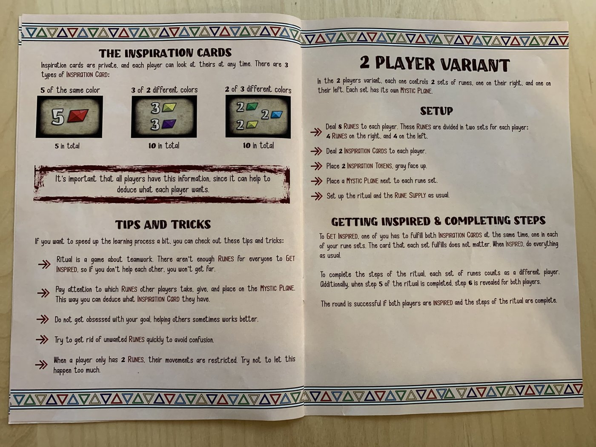
原书「感召牌 / 提示与技巧 / 双人变体」跨页，左页上方为感召牌类型示例
- 5 枚同色——共 5 张。
- 3 枚，分属 2 种不同颜色——共 10 张。
- 2 枚，分属 3 种不同颜色——共 10 张。
让所有玩家知道这些信息很重要，因为这有助于推断每位玩家需要什么。
双人变体（2 Player Variant）
在双人游戏中，每位玩家控制 2 组符文：左手组和右手组。每组有自己的神秘位面。
原书双人变体规则（上页右半部分）
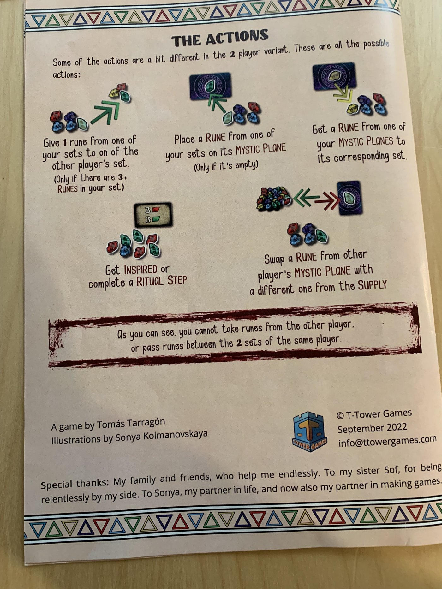
原书双人变体「全部可选行动」单页（行动说明文字顶部明确写着 2 player variant）
设置差异
- 给每位玩家发 8 枚符文：右手 4 枚、左手 4 枚。
- 给每位玩家发 2 张感召牌。
- 放置 2 个感召标记（灰色面朝上）。
- 在每组符文旁各放 1 个神秘位面。
- 仪式板、仪式牌与供应区按通常方式设置。
感召与仪式
要获得感召，必须同时满足两张感召牌——每组符文中完成一张（具体哪张完成哪组不限）。
完成仪式步骤时，每组符文视为不同玩家。此外，当完成步骤 5 时，两名玩家都会揭示步骤 6。
若两名玩家都已获得感召，且该轮仪式步骤全部完成，则该轮成功。
提示与技巧（Tips and Tricks）
原书提示与技巧（上页左半部分下方）
- 《Ritual》是团队合作游戏。符文不够让所有人同时获得感召，不互相帮助就走不远。
- 注意观察其他玩家拿走、给出和放到神秘位面上的符文，以此推断他们拥有哪张感召牌。
- 不要执着于自己的目标；有时帮助他人效果更好。
- 尽快处理掉不需要的符文，避免混淆。
- 当玩家只剩 2 枚符文时，行动会受到限制。尽量避免这种情况。
仪式古卷（Ancient Book of Rituals）
一旦所有人都完成了符文的启蒙仪式，你们便可执行其他仪式。但请谨慎行事：建议所有仪式先以「学徒」速度完成，直到能熟练驾驭符文。熟练掌握后，可再切换到「萨满」速度，让你们的仪式更加强力。
致所有萨满的警告：在熟练掌握全部仪式之前，尝试以「大师」或「传说」速度执行任何仪式，都可能带来灾难性的后果。
古卷记载了文明世代相传的仪式，分为 4 个难度（速度）等级，由易到难依次为「学徒 / 萨满 / 大师 / 传说」。
我在每个仪式下方留了 4 个记录框，完成后可在其中一个内写入萨满团队的名字，让你们被人铭记。
建议所有萨满至少以「学徒」速度完成一次启蒙仪式，否则可能无法和谐协作。
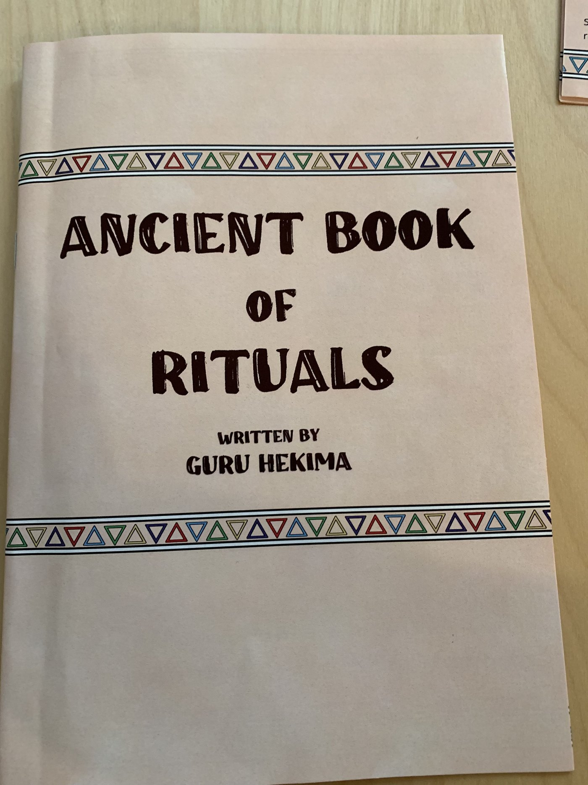
仪式古卷（Ancient Book of Rituals）封面
第一章：灵性启蒙（Spiritual Initiation）
介绍仪式最基础的步骤，帮助新手理解个人目标与共同目标的关系。该章仪式牌条件示例：
- 只有一名萨满可以拥有某种颜色；场上必须有至少 3 枚该颜色符文。
- 所有萨满必须恰好拥有 1 枚某种颜色符文。
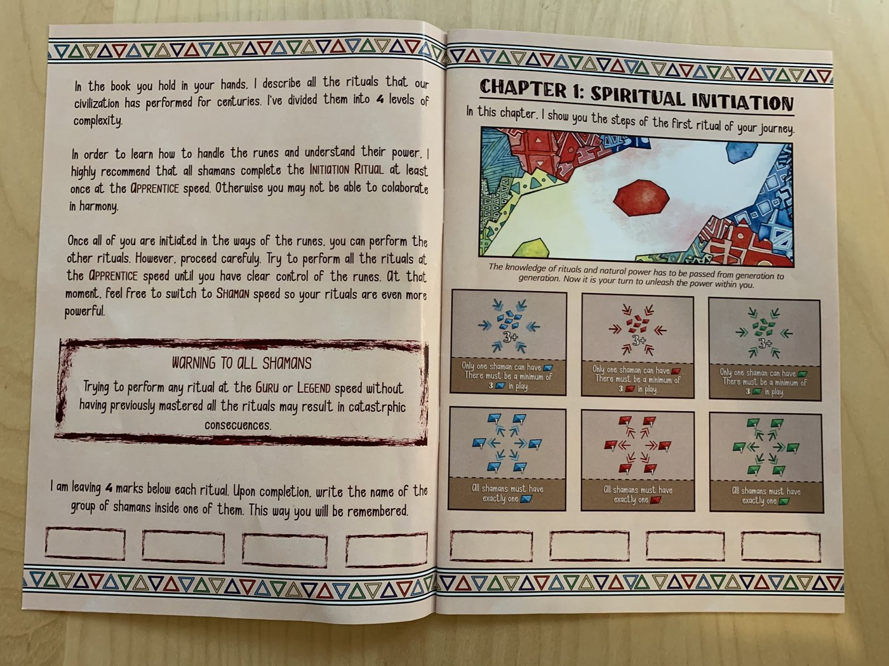
原书第一章「灵性启蒙（Spiritual Initiation）」与启蒙仪式牌示例
第二章：基础仪式（Basic Rituals）—— 结组（Grouping）
本章引入 结组（Grouping）概念：仪式牌上若显示多个符文在一个矩形框内，表示所有显示颜色的符文必须组成“组”（成对、3 枚一组等）。
例：红-蓝标记 3+，表示场上所有红色与蓝色符文必须两两配对，且至少需要 3 个这样的配对。神秘位面上的符文仍视为该玩家符文的一部分，参与结组。
熄灭野火（Extinguish the Wild Flames）
野火威胁森林与庄稼，唯有水的力量能保护珍贵的自然。牌组涉及颜色隔离、恰好数量、红蓝配对等条件。
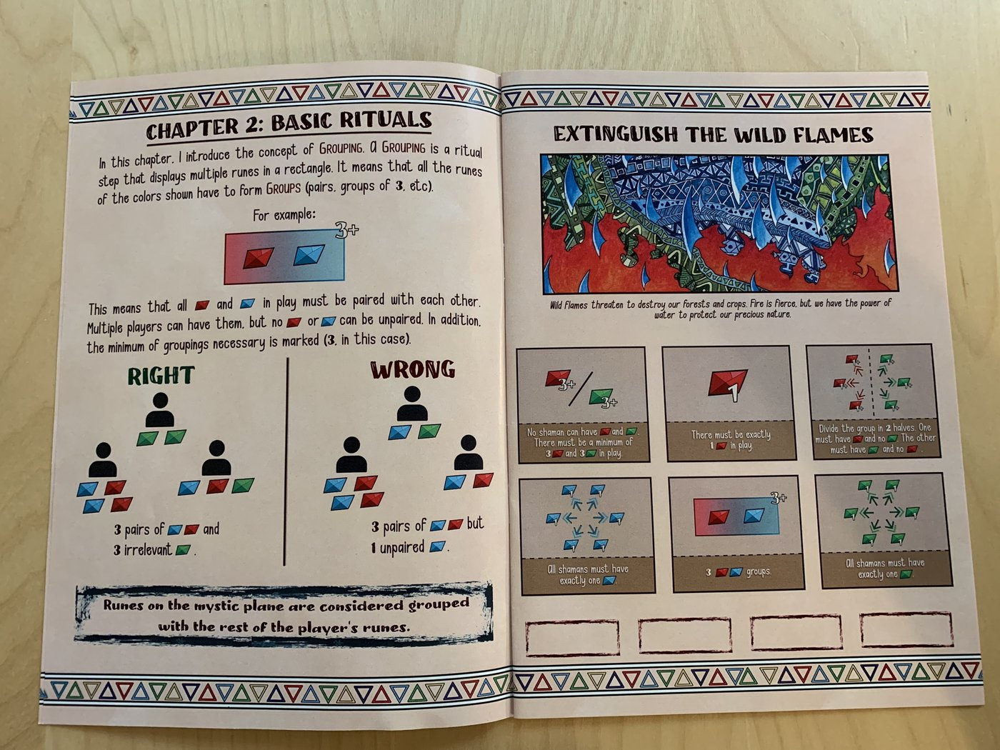
原书第二章「基础仪式（Basic Rituals）」：结组（Grouping）概念与熄灭野火
第三章：进阶仪式（Advanced Rituals）—— 结阵（Formations）
本章引入 结阵（Formation）概念：仪式步骤由多个“组”构成，必须由相邻萨满组成。所有显示颜色的符文都必须处于有效的结阵中。
例：绿-蓝-绿 表示所有蓝色符文必须组成 2 人一组，且相邻两名萨满都必须各有 1 枚绿色符文。可以有任意数量的结阵，但所有相关颜色都必须且只能属于 1 个结阵。
平息夜海（Calm the Ocean at Night）
海洋与黑夜激烈搏斗，只有调和自然力量才能确保生存。牌组涉及颜色均分、结阵、恰好数量与配对。
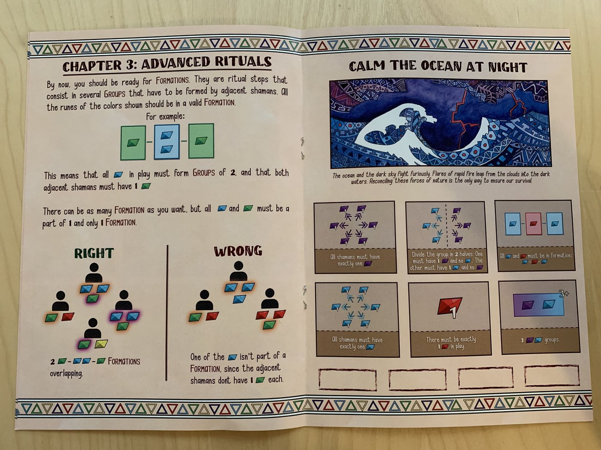
原书第三章「进阶仪式（Advanced Rituals）」：结阵（Formation）概念与平息夜海
第四章：专家仪式（Expert Rituals）—— 神秘位面（Mystic Plane）
本章最复杂，需要驾驭神秘位面的力量。当符文图标周围有光环时，表示它应被放到神秘位面上。
例：2+ 绿色带光环，表示场上所有绿色符文必须组成 2 枚一组，且每组中必须有 1 枚位于神秘位面上。若两个符文标有相同字母，则必须属于同一类型。
成为自然（Become One With Nature）
成为自然是成为 Guru 之路的终点。若决定执行它，你将面临终极挑战：决定用哪些符文来完成某些步骤。
例：标有字母 A 的两枚符文（其中一枚带光环、表示应在神秘位面上）组成 2 枚一组，标记 3+。每组中必须恰好 1 枚位于神秘位面。由于两枚符文都标有 A，所以必须属于相同类型。
缔造大森林（Create a Great Forest）
自然灾害过后，我们必须恢复珍贵的森林；若没有森林，我们所熟知的生活将不复存在。引导我们全部的自然能量，可让恢复过程几乎在瞬间完成。
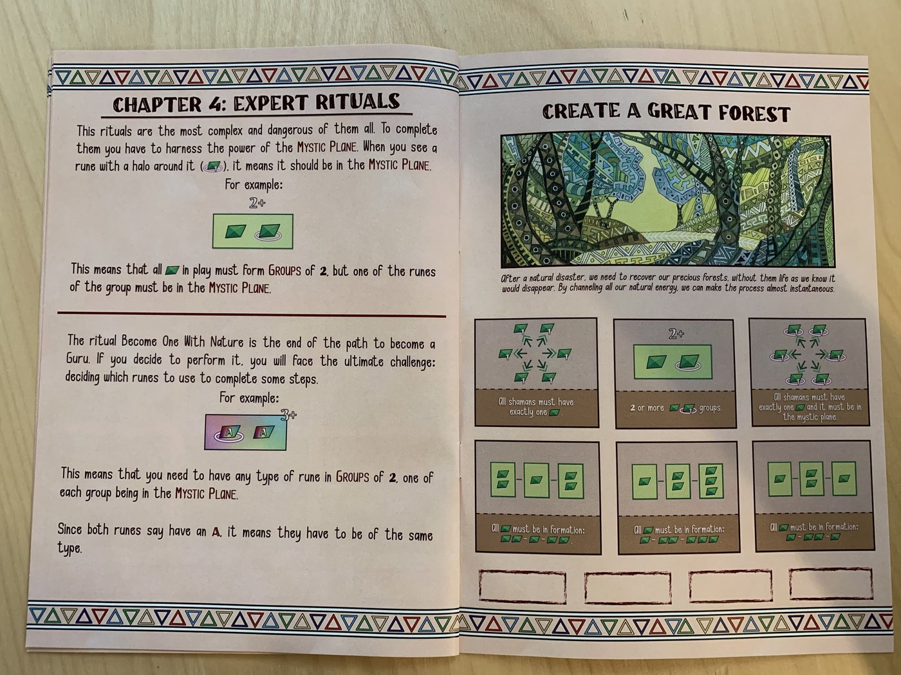
原书第四章「专家仪式（Expert Rituals）」：神秘位面（Mystic Plane）概念与缔造大森林
其他仪式
能量再平衡（Energy Rebalance）
当未知力量的厄运降临时，可进行能量再平衡。危险，但或许是唯一生机。
凛冬终结（Winter's End）
寒冬久驻不去，结束遥遥无期。庄稼与牲畜受苦。必须让白昼开始驱散黑夜，使植物走出漫长的荫蔽，重新生长。
自然庇护（Nature's Protection）
植物、水、火、日、黑暗皆有伟力。编织这些能量，可结成强大的保护链。
火山喷发（Erupt a Volcano）
集中火之能量并以乌云环绕，可让火山重焕生机，拥抱其令人惊叹的力量。
河流与庄稼的复苏（Rise of the River and Crops）
干旱与歉收与任何敌人一样危险。唯一的解决之道：让河流与庄稼复苏。
原书其他仪式牌图示
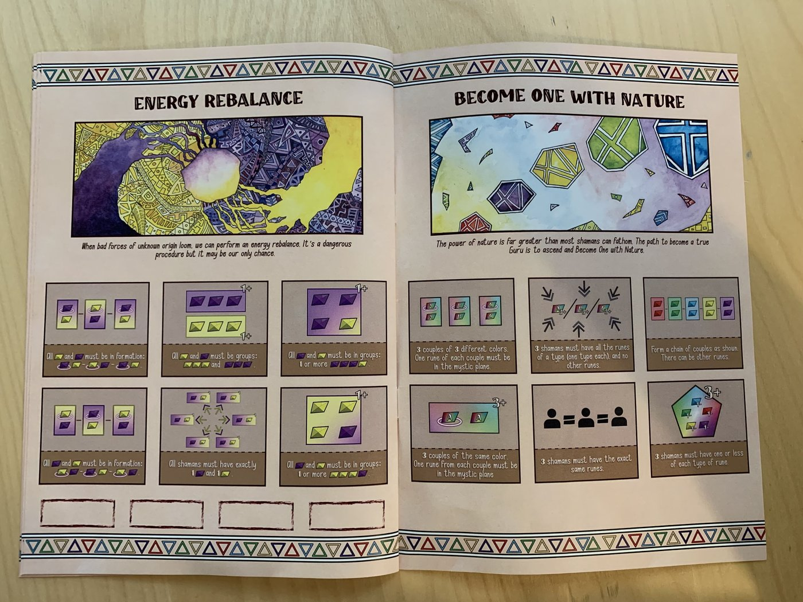
能量再平衡 / 成为自然
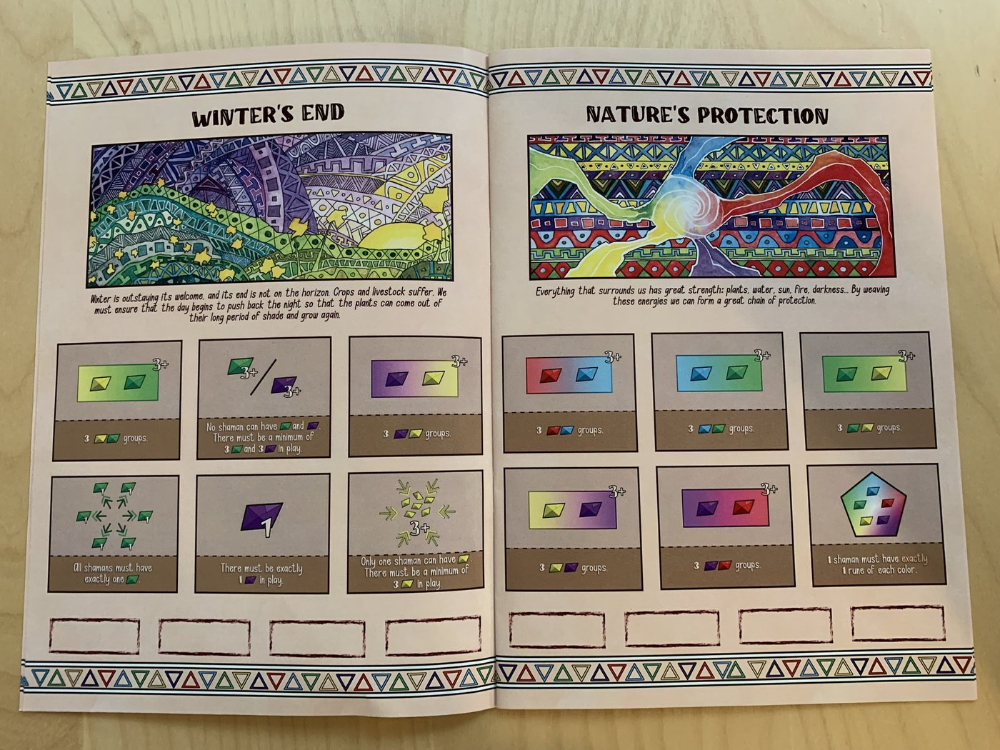
凛冬终结 / 自然庇护
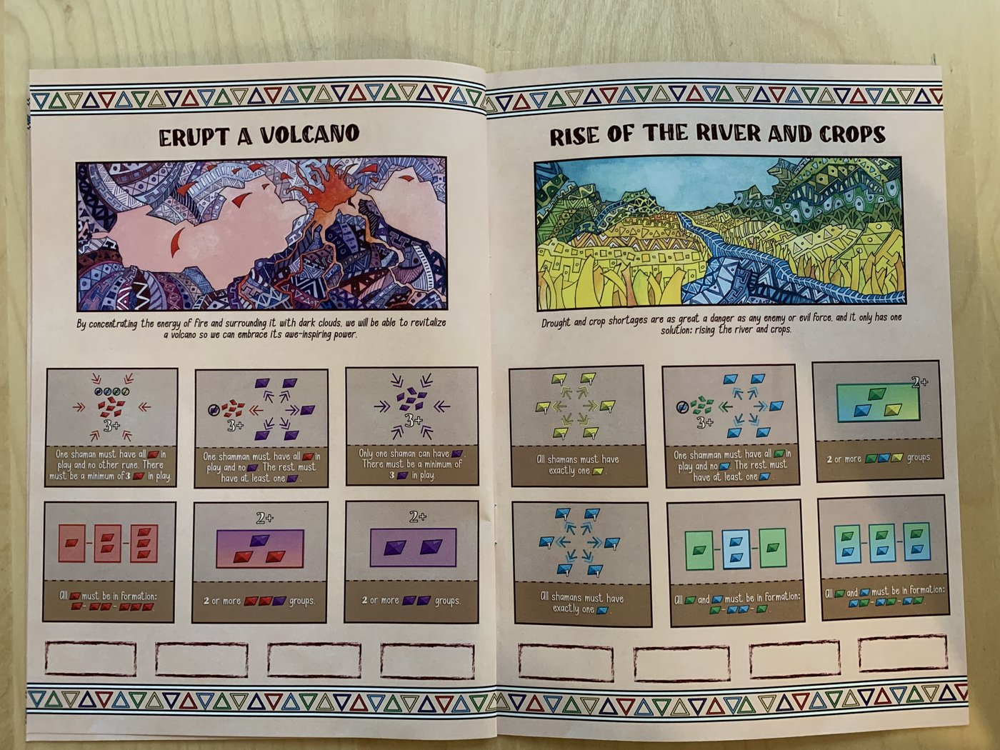
火山喷发 / 河流与庄稼的复苏